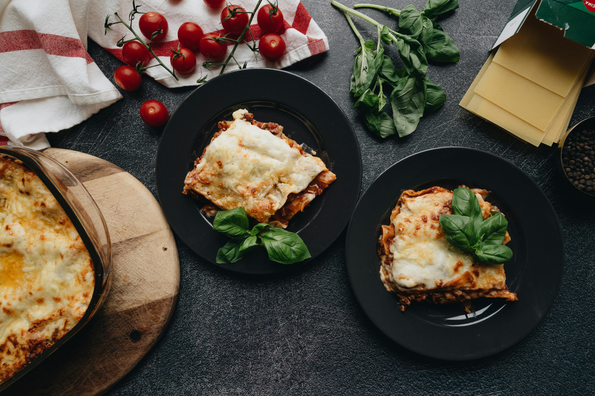

Home
Lasagna della Nonna

Description
Lasagna is one of those classic comfort dishes that never gets old. Layers of
pasta, rich meat sauce, and creamy béchamel come together in the oven to create
something deeply satisfying — perfect for a family dinner or feeding a crowd.
The beauty of lasagna is that it's forgiving. You don't need to be a professional
cook to pull it off. A little patience while the sauce simmers is really all it
takes, and the result is always worth it.
Tips: Dried pasta sheets work perfectly here — no need to pre-cook. If your bolognese looks a
little dry before assembling, stir in a splash of water or stock. Leftovers reheat beautifully and
arguably taste better the next day.
Cooking Directions
Ingredients
- 250g lasagna sheets
- 500g ground beef
- 1 onion, diced
- 2 garlic cloves, minced
- 400g canned crushed tomatoes
- 2 tbsp tomato paste
- 600ml milk
- 50g butter
- 50g flour
- 80g Parmesan, grated
- Salt, pepper, olive oil
Steps
- Sauté onion and garlic in olive oil until soft. Add beef and brown.
- Stir in tomato paste and crushed tomatoes. Simmer on low for 30 minutes.
Season with salt and pepper.
- Make béchamel: melt butter, whisk in flour, then gradually add milk. Stir until thick.
- Preheat oven to 190°C. Layer bolognese, pasta sheets, and béchamel in a baking dish. Repeat.
Finish with béchamel and Parmesan.
- Bake covered for 30 min, then uncovered for 20 min until golden. Rest 15 minutes before serving.
Home